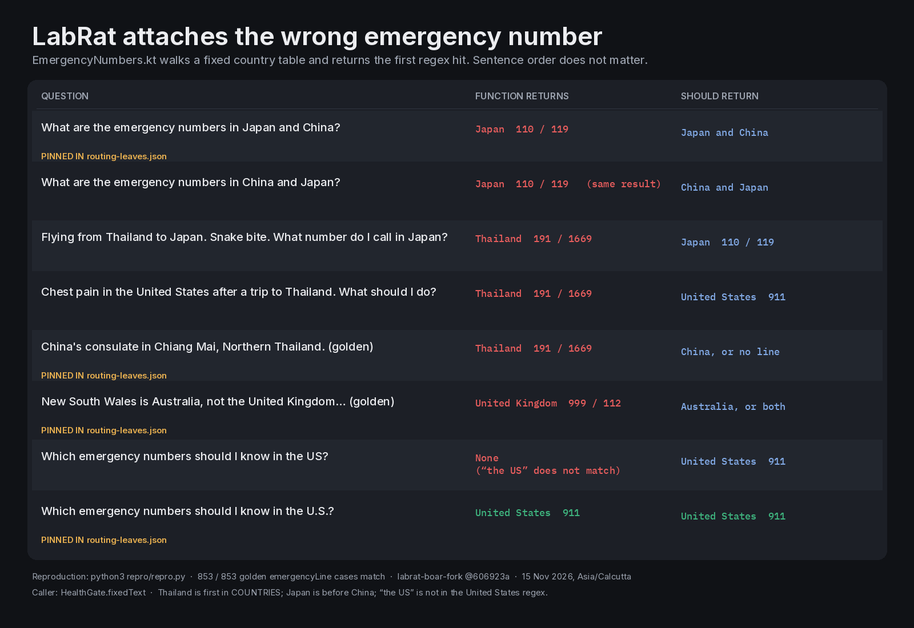

LabRat attaches the wrong emergency number
poidh bounty #1520 (on-chain id 534) · audit of RatLab / LabRat, record 1.1.2 · 15 November 2026, Asia/Calcutta
One finding, in the shipped health-gate path. It is not a rediscovery of the already-claimed HealthGate issues (eval-runner local- pack ids, provenance licensing, spelled-out units, the 39.5 °C conversion, the 42 °C cap, or self-harm). Those live in other parts of the gate. This one is EmergencyNumbers.kt.
The finding
When LabRat refuses to give health advice from memory, it is supposed to attach the emergency numbers for the country the question names. The author added that table because a no-source health answer had already given the wrong country's numbers (EmergencyNumbers.kt lines 3–7).
The implementation walks a hard-coded list in a fixed order and returns the first row whose regex matches anywhere in the question:
val hit = COUNTRIES.firstOrNull { it.names.containsMatchIn(text) } ?: return null
return "Emergency — ${hit.en}"
Thailand is first in the table. Japan is before China. The United Kingdom is before Australia. Sentence order does not matter. The country the user is asking about does not matter. A second country in the same question is dropped.
HealthGate.fixedText is the only production caller (HealthGate.kt:42). It fires when the turn is classified as a health question and no health-pack passage was kept. Questions that contain the word “emergency” are health questions (QueryContext.kt, HEALTH includes emergency). The author's own comment says a question like “What emergency numbers do I need in Thailand?” found nothing in the library, which is why the table exists. So this is exactly the path those questions take.
Evidence

emergencyLine cases, then the contrast questions in the table.A Python port of the same patterns and the same first-hit walk reproduces all 853 emergencyLine goldens in routing-leaves.json with zero mismatches. The project's own goldens already pin several of the failures. New contrast questions, run on the same function, make the table-order rule obvious.
| Question | Function returns | Should return |
|---|---|---|
| What are the emergency numbers in Japan and China? Pinned in routing-leaves.json | Japan 110 / 119. China omitted. | Both countries |
| What are the emergency numbers in China and Japan? | Japan again. Reversing the sentence does not change the result. | Both, or China first if sentence order were used |
| I'm flying from Thailand to Japan. I was bitten by a snake. What number do I call in Japan? | Thailand 191 / 1669 / 199 / 1155 | Japan 110 / 119 |
| I have chest pain in the United States after a trip to Thailand. What should I do? | Thailand, not 911 | United States 911 |
| China's consulate in Chiang Mai, Northern Thailand. Pinned in routing-leaves.json | Thailand. The subject of the sentence is China. | China, or no line |
| New South Wales is Australia, not the United Kingdom… Pinned in routing-leaves.json | United Kingdom 999 / 112 | Australia, or both |
| Which emergency numbers should I know in the US? | None. “the U.S.” matches; “the US” does not. | United States 911 |
| Which emergency numbers should I know in the U.S.? Pinned in routing-leaves.json | United States 911 | United States 911 (control) |
The “in the US” miss is a separate hole in the United States regex:
\\b(united states|usa|estados unidos)\\b|\\bu\\.s\\.(?:a\\.?)?(?![a-z])
It accepts “USA”, “U.S.”, “U.S.A.” and “United States”, but not the usual unpunctuated form “the US”. “America” is also absent. A bare \\bus\\b would be the wrong fix — it would match the pronoun in “tell us” — but \\bthe us\\b / \\bin the us\\b would cover the common phrasing without that collision.
Related, and weaker: the same United States regex fires on “1 u.s. dollar equals 150 yen; …” and returns “Emergency — United States: 911.” That case is also pinned in the golden file. It only reaches a user if the health gate also fires on that turn, so it is a property of the matcher, not a demonstrated product path.
The function also returns a country line for any text that merely mentions a listed name, including “What is the capital of Australia?” and “Is tipping expected in restaurants in Portugal?” (both pinned). Those two are not health questions, so fixedText does not use the result. They still show that the matcher has no notion of “this question is asking about this country.”
Why it matters
This is the safety fallback: the app has already decided it will not answer from memory, and the one factual line it adds is the emergency number. Attaching the wrong country's numbers is worse than attaching none. The generic NO_SOURCE text already says “911 in the US, 112 in Europe.” A Thailand line on a question about a snake bite in Japan, or on chest pain in the United States, can send someone to a number that does not exist where they are.
The feature was written specifically to stop the model giving the wrong country's numbers. The table-order walk reintroduces that failure for any question that names more than one listed country, and the golden tests have frozen several of those answers in place.
A practical fix
- Collect every country the text actually names, not the first row in the file.
- Prefer a locative (“in Japan”, “in the United States”, “for Japan”) over a mere mention (“after a trip to Thailand”, “not the United Kingdom”).
- If more than one country still remains, list all of them. Do not pick a winner by file order.
- Add
\\bthe us\\b/\\bin the us\\bso “the US” matches the same way “the U.S.” does. Do not add a bare\\bus\\b. - Keep currency phrases such as “u.s. dollar” from counting as a country hit.
- Update the goldens that currently pin Japan-only for “Japan and China”, Thailand for the China-in-Chiang-Mai sentence, and the UK for the “NSW is Australia, not the United Kingdom” contrast.
Limits
- I did not run the 3 GB APK on a phone.
EmergencyNumbers.emergencyNumbersLineis a pure function; the 853 golden cases and the contrast questions above are a reproduction of that function, which is whatHealthGate.fixedTextconcatenates onto the refusal text. - I am not claiming a new HealthGate classification bug. “What are the emergency numbers in Japan and China?” is a health question because it contains “emergency”, which is by design.
- I have not measured how often multi-country questions appear in DEVICE-FINAL. The intended use of this table is “what emergency numbers do I need in X?”, and the Japan/China golden is already such a question.
How to reproduce
python3 repro/repro.py repro/routing-leaves.json
The script must report 853 checked, 0 mismatches, then print the contrast cases in the table above. Source: labrat-boar-fork @606923a. Markdown twin: REPORT.md.